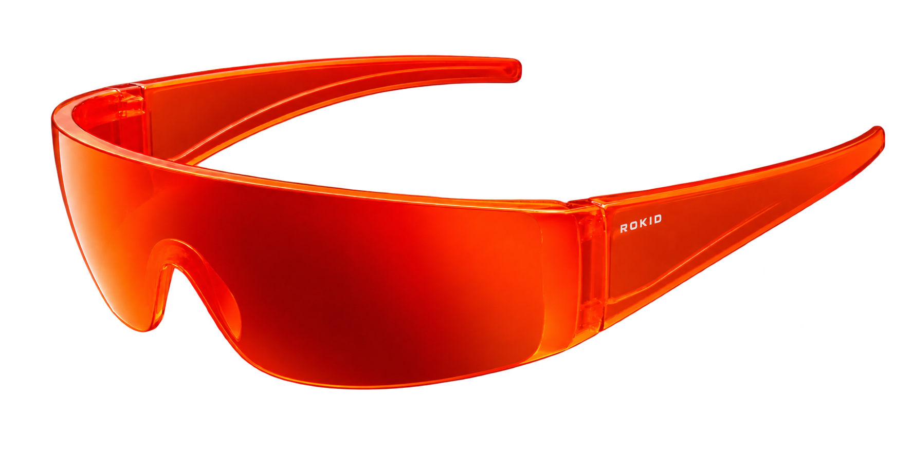

跳至作品集
陈高波
KIDAN CHEN
新南威尔士大学 · 金融科技 · 2025.01—2027.11
152 6881 7047
g1628908@gmail.com
序章 / 个人作品集
个人档案
＋
关于我
01 ↗
代码仓库
02 ↗
联系我
03 ↗
查看简历
04 ↗

探索我的项目
↗
＋
01 / 个人项目
Nucleus Cards
查看项目 ↗
＋
02 / 个人项目
CourtMatch
查看项目 ↗
＋
ROKID / AI 产品实习
让交互自然发生。
打开实习档案 ↗
拖动切换视角
点击眼镜查看实习
KIDAN
跳过开场 ↗
×
陈高波 / 个人档案
2026